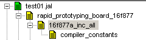

august, 2006
INC 2 JAL
Download
INC2JAL and some examples can be found here.
Generating 16F917 (October 2007)
|
Running Inc2JAL, v10 : will give a lot of errors, indicating wrong registers. In INC2JAL, v11, each register error is only reported once, reducing the number of error messages. |
|
|
If we look in the INC file, we see that the register definition "LCDDATA0" differs from the bits definition "LCDDAT0". For JAL it's absolutely necessary to know in which bit a byte resides !! |
|
|
So changing: into: solves the problem |
|
|
Then there's register LCDSE3 mentioned which doesn't exist at all. So change it into: will solve the problem |
|
|
Then there's another problem, INC2JAL need fuse-identifiers to consists of 2 parts separated by an underscore, so the fuse-IDs on the right will cause a crash. INC2JAL v11, has a better error message for this problem and doesn't crash anymore. |
|
|
So we should replace the above in the INC-file with something like the part on the right. |
Introduction
This module translates the microchip inc-files to JAL-files.
Although this program is an integral part of JALcc, it's also released as a stand-alone program.
The inc-files defines all specific settings of a specific type of PIC.
In most cases you look up once how to include the correct files, and as long as you stay with this PIC-type, there is no problem. If you want to use another PIC, your search for useless information starts all over again. Not to think of people like myself, who switch from 1 PIC to another on the flight.
Therefor INC2JAL is now extended to also read the uChip LKR-file, which results in just 1 file that contains all PIC specific information. Below are the differences shown.
|
Old situation |
New Situation |
|
 |
As you can see, in the new situation there's only 1 device dependent library, and that's exactly the file generated by INC2JAL, so it's very easy to switch between different PICs.
So here is how a typical main program will look:
There is one problem I haven't solved: the compiler needs a default value for the fuses:
const word _fuses ....
but unfortunately I don't know an automatic way to generate this constant.
Another point of attention are the fuses, although the INC-file, completely resolves the different bits in the fuses, it's not easy to create device independent code, to set these bits. This is caused by uChip which uses all kind of different names for the same bits !!
Below you see the main window of INC2JAL after opening an uChip INC-file.
All windows can be edited and chages are stored automatically.
Don't trust on the uChip files, they are sometimes a real mess !!
I've collected a number of translated inc-files in a browsable directory:
(Here you can also find the stand alone version of INC2JAL)
http://oase.uci.ru.nl/~mientki/data_www/pic/download/jal_libs/